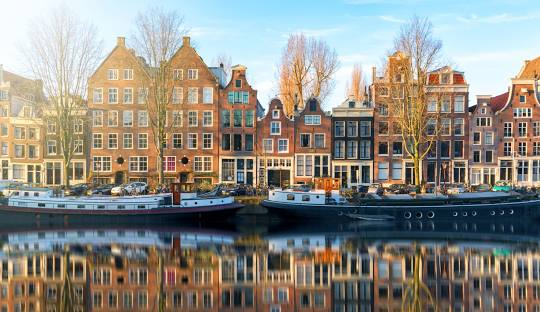

Amsterdã, Países Baixos
Amsterdã é conhecida por seus belos canais, arquitetura histórica e museus renomados como o Museu Van Gogh e a Casa de Anne Frank.
Viena, Áustria
Viena, a capital da Áustria, é famosa por sua rica herança musical e cultural. Visite o Palácio de Schönbrunn, a Ópera Estatal de Viena e a Catedral de Santo Estêvão.
Atenas, Grécia
Atenas é o berço da civilização ocidental e da democracia. Os pontos turísticos mais famosos incluem a Acrópole, o Partenon e o Templo de Zeus Olímpico.
Praga, República Tcheca

Praga é uma cidade encantadora com arquitetura medieval. Não deixe de visitar o Castelo de Praga, a Ponte Carlos e o Relógio Astronômico.